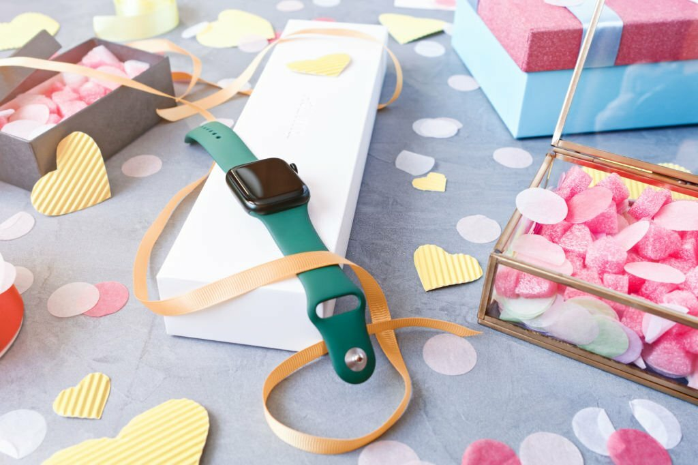
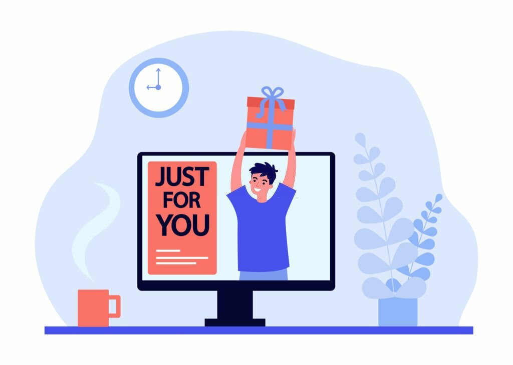

Technikbegeisterte sind von der Welt der Innovationen und Gadgets fasziniert. Ihre Leidenschaft für Technologie kann die Auswahl des richtigen Geschenks zu einer spannenden Herausforderung machen. In diesem Artikel erfahren Sie, wie Sie Geschenke für Technikbegeisterte auswählen, die Begeisterung und Freude auslösen.
Einleitung
Die Bedeutung von Geschenken für Technikbegeisterte
Geschenke für Technikbegeisterte sind mehr als nur materielle Gegenstände. Sie sind Ausdruck von Wertschätzung für ihre Leidenschaft und Interessen. Das richtige Geschenk kann die Begeisterung für Technologie weiter entfachen.
Warum ist die Auswahl des richtigen Geschenks wichtig?
Die Auswahl des richtigen Geschenks ist wichtig, da sie zeigt, dass Sie die Vorlieben und Interessen des Beschenkten verstehen. Es stärkt die Beziehung und sorgt für freudige Überraschungsmomente.
Den Technikbegeisterten verstehen
Die Leidenschaft für Technologie
Technikbegeisterte sind von Natur aus neugierig und aufgeschlossen für Innovationen. Sie lieben es, neue Gadgets und Technologien zu entdecken und auszuprobieren.
Technische Vorlieben und Interessen
Achten Sie auf die speziellen technischen Vorlieben und Interessen des Beschenkten. Manche mögen sich für Smart Home-Geräte begeistern, während andere leidenschaftliche Gamer sind.
Kreative Geschenkideen
Gadgets und Innovationen
Gadgets und innovative Technologien sind oft ein Treffer bei Technikbegeisterten. Von smarten Lautsprechern über Drohnen bis hin zu Virtual-Reality-Brillen gibt es eine breite Palette zur Auswahl.
Zubehör und Gadgets für spezielle Hobbys
Berücksichtigen Sie die Hobbys des Beschenkten. Zubehör für Fotografie, DIY-Elektronikbausätze oder High-End-Kopfhörer könnten perfekte Geschenke sein.
Personalisierte technische Geschenke
Personalisierte Geschenke, wie mit dem Namen gravierte Gadgets oder individuell gestaltete Handyhüllen, zeigen, dass Sie sich Gedanken gemacht haben.
Zeitaufwändige Projekte
Wenn Sie handwerklich begabt sind, könnten selbstgemachte technische Projekte wie ein selbstgebauter Roboter oder eine programmierte LED-Lichtanzeige eine besondere Überraschung sein.
Wo Sie Geschenke für Technikbegeisterte finden
Elektronikfachgeschäfte und Online-Marktplätze
Elektronikfachgeschäfte und Online-Marktplätze bieten eine breite Auswahl an technischen Gadgets und Zubehör. Hier können Sie sich inspirieren lassen und die neuesten Innovationen entdecken.
Crowdfunding-Plattformen für innovative Produkte
Crowdfunding-Plattformen wie Kickstarter sind großartige Orte, um innovative, noch nicht auf dem Markt erhältliche Produkte zu finden. Sie könnten das nächste große Ding verschenken.
DIY-Optionen
Wenn Sie ein Bastler sind, können Sie auch selbst technische Geschenke basteln. Selbstgemachte Projekte haben oft einen besonderen persönlichen Touch.
Die Bedeutung des richtigen Geschenks
Begeisterung und Freude
Das richtige Geschenk wird Begeisterung und Freude beim Beschenkten auslösen. Es wird ihm das Gefühl geben, dass seine Interessen und Leidenschaften geschätzt werden.
Zeigen von Wertschätzung und Verständnis
Besondere Geschenke zeigen, dass Sie sich die Zeit genommen haben, die Vorlieben und Interessen des Beschenkten zu verstehen. Sie sind Ausdruck von Wertschätzung.
Aufbau von Beziehungen
Die Auswahl des richtigen Geschenks trägt zur Stärkung der Beziehung bei. Sie schafft eine emotionale Verbindung zwischen Schenkendem und Empfänger.
Fazit
Die Auswahl des richtigen Geschenks für Technikbegeisterte erfordert Überlegung und Recherche, aber die Belohnungen sind es wert. Mit einem Geschenk, das ihre Leidenschaft feiert, können Sie ihre Begeisterung und Freude steigern.
Häufig gestellte Fragen
Was sind einige beliebte Gadgets für Technikbegeisterte?
Beliebte Gadgets für Technikbegeisterte sind smarte Lautsprecher, Tablets, Action-Kameras, Drohnen und Fitness-Tracker.
Wie kann ich personalisierte technische Geschenke finden?
Personalisierte technische Geschenke können online in spezialisierten Geschäften oder bei Anbietern von Gravur- und Individualisierungsdiensten gefunden werden.
Welche Geschenke eignen sich für besondere Anlässe wie Geburtstage oder Jubiläen?
Für besondere Anlässe sind hochwertige Gadgets, personalisierte Technologieaccessoires oder innovative Produkte oft eine gute Wahl.
Welche Kriterien sollte ich bei der Auswahl von technischen Geschenken beachten?
Achten Sie auf die Interessen, Vorlieben und bereits vorhandene technische Ausstattung des Beschenkten, um das passende Geschenk auszuwählen.
Gibt es preiswerte Optionen für Geschenke an Technikliebhaber?
Ja, es gibt preiswerte Optionen, wie Zubehör oder selbstgemachte Geschenke. Ein durchdachtes Geschenk muss nicht teuer sein, um geschätzt zu werden.